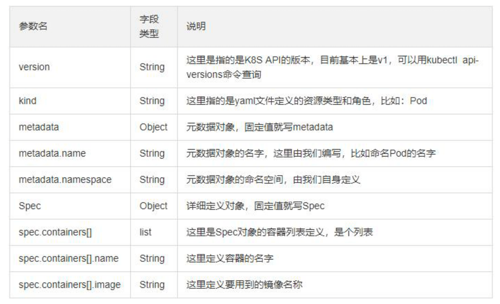

K8S 中所有的内容都抽象为了资源，资源实例化之后就叫做对象。
在 Kubernetes 系统中，Kubernetes 对象是持久化的实体，Kubernetes 使用这些实体去表示整个集群的状态。特别地，它们描述了如下信息：
- 哪些容器化应用在运行，以及在哪个
Node上 - 可以被应用使用的资源
- 关于应用运行时表现的策略，比如重启策略、升级策略，以及容错策略

Kubernetes 对象是 “目标性记录” —— 一旦创建对象，Kubernetes 系统将持续工作以确保对象存在。通过创建对象，本质上是在告知 Kubernetes 系统，所需要的集群工作负载看起来是什么样子的，这就是 Kubernetes 集群的期望状态。
1. 对象资源的分类
根据不同的级别，可以将 Kubernetes 中的资源进行多种分类。
Kubernetes 是一个可移植的、可扩展的开源平台，用于管理容器化的工作负载和服务，可促进声明式配置和自动化。Kubernetes 拥有一个庞大且快速增长的生态系统。Kubernetes 的服务、支持和工具广泛可用。以下列举的内容都是 Kubernetes 中的 Object，这些对象都可以在 yaml 文件中作为一种 API 类型来配置。
- 工作负载型资源
- Pod、ReplicaSet、Deployment、StatefulSet、DaemonSet、Job、CronJob
- 服务发现及负载均衡型资源
- Service、Ingress
- 配置与存储型资源
- Volume、CSI
- 特殊类型的存储卷
- ConfigMap、Secret、DownwardAPI
- 集群级别资源
- Namespace、Node、Role、ClusterRole、RoleBinding、ClusterRoleBinding
- 元数据型资源
- HPA、PodTemplate、LimitRange
2. 常用字段的解释
下面就需要我们熟悉，如何使用 yaml 文件来描述 Kubernetes 对象。
当创建 Kubernetes 对象时，必须提供对象的规约，用来描述该对象的期望状态，以及关于对象的一些基本信息，例如名称。 当使用 Kubernetes API 创建对象时，或者直接创建或者基于 kubectl，API 请求必须在请求体中包含 JSON 格式的信息。 大多数情况下，需要在 .yaml 文件中为 kubectl 提供这些信息。 kubectl 在发起 API 请求时，将这些信息转换成 JSON 格式。
大体的 .yaml 文件格式如下所示，其中包含的都是配置 yaml 文件启动服务必须或者建议配置的字段。
apiVersion: group/api-version # 版本信息
kind: # 资源类别
metadata: # 资源元数据
name: # 元数据对应的名称
namespace: # 元数据所属的命名空间
lables: # 对资源打上便签供后续使用
annotations: # 主要目的是方便用户阅读查找
spec: # 定义期望状态
status: # 设置当前状态
这里有一个 .yaml 示例文件，展示了 Kubernetes Deployment 的必需字段和对象规约。
apiVersion: apps/v1
kind: Deployment
metadata:
name: nginx-deployment
namespace: app-test
lables:
apps: nginx
spec:
selector:
matchLabels:
app: nginx
replicas: 2
template:
metadata:
labels:
app: nginx
spec:
containers:
- name: nginx
image: nginx:1.14.2
ports:
- containerPort: 80
使用类似于上面的 .yaml 文件来创建 Deployment，一种方式是使用 kubectl 命令行接口中的 kubectl apply 命令， 将 .yaml 文件作为参数。
# 创建Deployment服务
kubectl apply -f ./deployment.yaml --record

3. Pod 的相关知识
了解和使用 Pod，才能掌握其应用范围和边界。
3.1 什么是 Pod
Pod 是 Kubernetes 应用程序的基本执行单元，即它是 Kubernetes 对象模型中创建或部署的最小和最简单的单元。简单的，我们可以理解为 Pod 是在集群上运行的进程。Pod 封装了应用程序容器或者在某些情况下封装多个容器、存储资源、唯一网络 IP 以及控制容器应该如何运行的选项。其中，Docker 是 Kubernetes Pod 中最常用的容器运行时，但 Pod 也能支持其他的容器运行时。Pod 的两个主要用途如下所示：
- 运行单个容器的
Pod—— 支持多容器的微服务实例- 每个
Pod一个容器的模型是最常见的使用情况，在这种情况下，可以将Pod看作单个容器的包装器，并且Kubernetes直接管理Pod，而不是容器。
- 每个
- 运行多个协同工作的容器的
Pod—— 基于多容器微服务模型的分布式应用模型Pod可能封装由多个紧密耦合且需要共享资源的共处容器组成的应用程序，Pod将这些容器和存储资源打包为一个可管理的实体。
- 分布式系统工具包：容器组合的模式 —— 有状态服务水平扩展
- 即将多个服务同时封装到同一个
Pod中，对外提供服务，而不再需要用户手动安装其他服务或者工具，真正做到即时即用的便捷效果。
- 即将多个服务同时封装到同一个
- 容器设计模式
- 云原生应用运行的环境都是复杂的分布式环境，在这种情况下，一些有用的设计模式可以起到四两拨千斤的作用。目前 K8s 社区推出的容器设计模式主要分为三大类：单容器管理模式、单节点多容器模式、多节点多容器模式。
Pod 中的容器被自动的安排到集群中的同一物理或虚拟机上，并可以一起进行调度。 容器可以共享资源和依赖、彼此通信、协调何时以及何种方式终止它们。Pod 提供了两种共享资源：网络 和 存储。
网络
- 每个
Pod分配一个唯一的IP地址。Pod中的每个容器共享网络命名空间，包括IP地址和网络端口。Pod内的容器 可以使用localhost互相通信。 当Pod中的容器与Pod之外 的实体通信时，它们必须协调如何使用共享的网络资源，例如端口。
- 每个
存储
- 一个
Pod可以指定一组共享存储卷。Pod中的所有容器都可以访问共享卷，允许这些容器共享数据。 卷还允许Pod中的持久数据保留下来，以防其中的容器需要重新启动。
- 一个
# 通过定义清单文件创建Pod
apiVersion: v1
kind: Pod
metadata:
name: myapp-pod
labels:
app: myapp
spec:
containers:
- name: myapp-container
image: busybox
command: ["sh", "-c", "echo Hello Kubernetes! && sleep 3600"]
# 通过定义清单文件创建Pod
apiVersion: v1
kind: Pod
metadata:
name: pod-demo
namespace: default
labels:
app: myapp
spec:
containers:
- name: myapp-1
image: hub.escapelife.site/library/nginx-test:v1
- name: busybox-1
image: busybox:latest
command:
- "/bin/sh"
- "-c"
- "sleep 3600"
3.2 Pod 的使用
我们很少会直接在 kubernetes 中创建单个 Pod。因为 Pod 的生命周期是短暂的，用后即焚的实体。当 Pod 被创建后，都会被 Kubernetes 调度到集群的 Node 上。直到 Pod 的进程终止、被删掉、因为缺少资源而被驱逐、或者 Node 故障之前这个 Pod 都会一直保持在那个 Node 上。
我们需要知道 Pod 本身是不会自愈修复的。如果 Pod 运行的 Node 故障或者是调度器本身故障，这个 Pod 就会被删除。同样的，如果 Pod 所在 Node 因为缺少资源或者 Pod 处于维护状态，那么 Pod 也就会被自动驱逐掉。Kubernetes 使用更高级的称为 Controller 的抽象层，来管理 Pod 实例。虽然可以直接使用 Pod，但是在 Kubernetes 中通常是使用 Controller 来管理 Pod 的。Controller 可以创建和管理多个 Pod，提供副本管理、滚动升级和集群级别的自愈能力。
需要注意的是，重启 Pod 中的容器跟重启 Pod 不是一回事。Pod 只提供容器的运行环境并保持容器的运行状态，重启容器不会造成 Pod 重启。
Kubernetes 使用了一个更高级的称为 控制器 的抽象，由它处理相对可丢弃的 Pod 实例的管理工作。 因此，虽然可以直接使用 Pod，但在 Kubernetes 中，更为常见的是使用控制器管理 Pod。
- Deployment
- StatefulSet
- DaemonSet
apiVersion: apps/v1
kind: Deployment
metadata:
name: nginx-deployment
labels:
app: nginx
spec:
replicas: 3
selector:
matchLabels:
app: nginx
template:
metadata:
labels:
app: nginx
spec:
containers:
- name: nginx
image: nginx:1.14.2
ports:
- containerPort: 80
4. Pod 的生命周期
Pod 的生命周期才是 Kubernetest 资源清单中的重中之重！
Kubernetes 中的基本组件 kube-controller-manager 就是用来控制 Pod 的状态和生命周期的，在了解各种 controller 之前我们有必要先了解下 Pod 本身和其生命周期。想要深入理解 Pod 的实现原理，最好最快的办法就是从 Pod 的生命周期入手，通过理解 Pod 创建、重启和删除的原理我们最终就能够系统地掌握 Pod 的生命周期与核心原理。
4.1 了解 Init 容器
我们知道 Pod 可以包含多个容器，应用运行在这些容器里面，同时 Pod 也可以有一个或多个先于应用容器启动的 Init 容器。Init 容器与普通的容器非常像，但是有两点不同之处。与普通容器的不同之处在于，Init 容器支持应用容器的全部字段和特性，包括资源限制、数据卷和安全设置，但是不支持 Readiness Probe，因为它们必须在 Pod 就绪之前运行完成。
- 其一就是，
Init容器总是运行到完成为止。 - 其二就是，每个
Init容器都必须在下一个Init容器启动之前成功完成才会继续运行。
如果 Pod 内设置的 Init 容器运行失败了，那么 Kubernetes 就会不断地重启该 Pod，直到 Init 容器成功为止。然而，如果 Pod 对应的重启策略 restartPolicy 的值为 Never，它不会重新启动。如果为一个 Pod 指定了多个 Init 容器，这些容器会按顺序逐个运行。每个 Init 容器必须运行成功，下一个才能够运行。当所有的 Init 容器运行完成时，Kubernetes 才会为 Pod 初始化应用容器并像平常一样运行。
因为 Init 容器具有与应用容器分离的单独镜像，其启动相关代码具有如下优势：
Init容器可以包含一些安装过程中应用容器中不存在的实用工具或个性化代码。例如，没有必要仅为了在安装过程中使用类似sed、awk、python或dig这样的工具而去FROM一个镜像来生成一个新的镜像。Init容器可以安全地运行这些工具，避免这些工具导致应用镜像的安全性降低。应用镜像的创建者和部署者可以各自独立工作，而没有必要联合构建一个单独的应用镜像。Init容器能以不同于Pod内应用容器的文件系统视图运行。因此，Init容器可具有访问Secrets的权限，而应用容器不能够访问。- 由于
Init容器必须在应用容器启动之前运行完成，因此Init容器提供了一种机制来阻塞或延迟应用容器的启动，直到满足了一组先决条件。一旦前置条件满足，Pod内的所有的应用容器会并行启动。
# 等待一个Service完成创建，通过类似如下shell命令
for i in {1..100}; do sleep 1; if dig myservice; then exit 0; fi; exit 1
# 在启动应用容器之前等一段时间，使用类似命令
sleep 60
4.2 使用 Init 容器
下面的例子定义了一个具有 2 个 Init 容器的简单 Pod。 第一个等待 myservice 启动，第二个等待 mydb 启动。 一旦这两个 Init 容器都启动完成，Pod 将启动 spec 区域中的应用容器。下面的准备的 yaml 文件展示了 mydb 和 myservice 两个 Pod 对应的 Service 服务。
- Pod
apiVersion: v1
kind: Pod
metadata:
name: myapp-pod
labels:
app: myapp
spec:
containers:
- name: myapp-container
image: busybox:1.28
command: ['sh', '-c', 'echo The app is running! && sleep 3600']
initContainers:
- name: init-myservice
image: busybox:1.28
command:
- "sh"
- "-c"
- "until nslookup myservice.$(cat /var/run/secrets/kubernetes.io/serviceaccount/namespace).svc.cluster.local; do echo waiting for myservice; sleep 2; done"
- name: init-mydb
image: busybox:1.28
command:
- "sh"
- "-c"
- "until nslookup mydb.$(cat /var/run/secrets/kubernetes.io/serviceaccount/namespace).svc.cluster.local; do echo waiting for mydb; sleep 2; done"]
- Service
apiVersion: v1
kind: Service
metadata:
name: myservice
spec:
ports:
- protocol: TCP
port: 80
targetPort: 9376
---
apiVersion: v1
kind: Service
metadata:
name: mydb
spec:
ports:
- protocol: TCP
port: 80
targetPort: 9377
要启动这个 Pod，可以执行如下命令，这可以看到对应的启动过程，但是我们会发现其状态一直停留在 init 的阶段没有就绪。通过日志我们发现，是因为 init 容器没有检测到 myservice 和 mydb 的 service 启动导致的。
# 启动Pod
$ kubectl apply -f myapp.yaml
pod/myapp-pod created
# 检查Pod状态
$ kubectl get -f myapp.yaml
NAME READY STATUS RESTARTS AGE
myapp-pod 0/1 Init:0/2 0 6m
# 如需更详细的信息
$ kubectl describe -f myapp.yaml
# 如需查看Pod内Init容器的日志
$ kubectl logs myapp-pod -c init-myservice
$ kubectl logs myapp-pod -c init-mydb
创建 mydb 和 myservice 的 service 之后，这样将能看到这些 Init 容器 执行完毕，随后 my-app 的 Pod 转移进入 Running 状态且 myapp-pod 被创建了。需要注意的是，如果 Pod 重启，所有 Init 容器必须重新执行。
# 创建mydb和myservice
$ kubectl create -f services.yaml
service "myservice" created
service "mydb" created
# 查看Pod状态
$ kubectl get -f myapp.yaml
NAME READY STATUS RESTARTS AGE
myapp-pod 1/1 Running 0 9m
4.3 状态和策略
- Pod 的各种状态
Pod 的 status 定义在 PodStatus 对象中，其中有一个 phase 字段。Pod 的运行阶段(phase)中其生命周期中的简单宏观概述。该阶段并不是对容器或 Pod 的综合汇总，也不是为了做为综合状态机。下面是 phase 可能的值：
| 状态值 | 描述 |
|---|---|
Pending |
API Server 已经创建该 Pod，但还有一个或多个容器的镜像没有创建成功，如下载镜像等状态 |
Running |
Pod 内所有容器均已创建，且至少有一个容器处于运行状态、正在启动或正在重启状态 |
Succeeded |
Pod 内所有容器均已成功执行退出，且不会再重启 |
Failed |
Pod 内所有容器均已退出，但至少有一个容器退出为失败状态 |
Unknown |
由于某种原因无法获取该 Pod 的状态，可能由于网络通信不畅导致 |
- Pod 的重启策略
Pod 重启策略 RestartPolicy 应用于 Pod 内的所有容器，并且仅在 Pod 所处的 Node 上由 kubelet 进行判断和重启操作。当某个容器异常退出或者健康检查失败时，kubelet 将根据 RestartPolicy 的设置来进行相应的操作。Pod 的重启策略包括 Always、OnFailure 和 Never 三种，默认值为 Always。
kubelet 重启失效容器的时间间隔以 sync-frequency 乘以 2n 来计算，例如 1、2、4 等，最长延时 5min，并且在成功重启后的 10min 后重置该时间。
| 重启策略 | 描述 |
|---|---|
Always |
当容器失效时，由 kubelet 自动重启该容器 |
OnFailure |
当容器终止运行切退出代码不为 0 时，由 kubelet 自动重启该容器 |
Never |
不论容器运行状态如何，kubelet 都不会重启该容器 |
4.4 容器探针的类型
探针是由 kubelet 对容器执行的定期诊断，主要是为了保证我们在使用容器探针来帮助我们检测和保证 Pod 中的服务正常运行。要执行诊断，kubelet 调用由容器实现的 Handler，有三种类型的处理程序：
- ExecAction
- 在容器内执行指定命令。如果命令退出时返回码为 0 则认为诊断成功。
- TCPSocketAction
- 对指定端口上的容器的 IP 地址进行 TCP 检查。如果端口打开，则诊断被认为是成功的。
- HTTPGetAction
- 对指定的端口和路径上的容器的 IP 地址执行 HTTP Get 请求。如果响应的状态码大于等于 200 且小于 400，则诊断被认为是成功的。
Kubelet 可以选择是否执行在容器上运行的三种探针执行和做出反应：
- livenessProbe
- 指示容器是否正在运行。如果存活探测失败，则
kubelet会杀死容器，并且容器将受到其 重启策略 的影响。如果容器不提供存活探针，则默认状态为Success。
- 指示容器是否正在运行。如果存活探测失败，则
- readinessProbe
- 指示容器是否准备好服务请求。如果就绪探测失败，端点控制器将从与
Pod匹配的所有Service的端点中删除该Pod的IP地址。初始延迟之前的就绪状态默认为Failure。如果容器不提供就绪探针，则默认状态为Success。
- 指示容器是否准备好服务请求。如果就绪探测失败，端点控制器将从与
- startupProbe
- 指示容器中的应用是否已经启动。如果提供了启动探测(
startup probe)，则禁用所有其他探测，直到它成功为止。如果启动探测失败，kubelet将杀死容器，容器服从其重启策略进行重启。如果容器没有提供启动探测，则默认状态为成功Success。
- 指示容器中的应用是否已经启动。如果提供了启动探测(
4.5 检测探针 -就绪检测
- readinessProbe-httpget
apiVersion: v1
kind: Pod
metadata:
name: readiness-httpget-pod
namespace: default
spec:
containers:
- name: readiness-httpget-container
image: escape/nginx-test:v1
imagePullPolicy: IfNotPresent
readinessProbe:
httpGet:
port: 80
path: /index1.html
initialDelaySeconds: 1
periodSeconds: 3
4.6 检测探针 - 存活检测
- livenessProbe-exec
apiVersion: v1
kind: Pod
metadata:
name: liveness-exec-pod
namespace: default
spec:
containers:
- name: liveness-exec-container
image: busybox
imagePullPolicy: IfNotPresent
command:
- "/bin/sh"
- "-c"
- "touch /tmp/live ; sleep 60; rm -rf /tmp/live; sleep 3600 "
livenessProbe:
exec:
command: ["test", "-e", "/tmp/live"]
initialDelaySeconds: 1
periodSeconds: 3
- livenessProbe-tcp
apiVersion: v1
kind: Pod
metadata:
name: probe-tcp
namespace: default
spec:
containers:
- name: nginx
image: escape/nginx-test:v1
livenessProbe:
initialDelaySeconds: 5
timeoutSeconds: 1
tcpSocket:
port: 80
- livenessProbe-httpget
apiVersion: v1
kind: Pod
metadata:
name: liveness-httpget-pod
namespace: default
spec:
containers:
- name: liveness-httpget-container
image: escape/nginx-test:v1
imagePullPolicy: IfNotPresent
ports:
- name: http
containerPort: 80
livenessProbe:
httpGet:
port: http
path: /index.html
initialDelaySeconds: 1
periodSeconds: 3
timeoutSeconds: 10
4.7 启动退出动作
我们可以设置，在 Pod 启动和停止的时候执行某些操作。
apiVersion: v1
kind: Pod
metadata:
name: lifecycle-demo
spec:
containers:
- name: lifecycle-demo-container
image: nginx
lifecycle:
postStart:
exec:
command:
- "/bin/sh"
- "-c"
- "echo Hello from the postStart handler > /usr/share/message"
preStop:
exec:
command:
- "/bin/sh"
- "-c"
- "echo Hello from the poststop handler > /usr/share/message"
5. Pod 的状态示例
Pod 中只有一个容器并且正在运行，容器成功退出
- 记录事件完成
- 如果 restartPolicy 为：
- Always：重启容器；Pod phase 仍为 Running
- OnFailure：Pod phase 变成 Succeeded
- Never：Pod phase 变成 Succeeded
Pod 中只有一个容器并且正在运行，容器退出失败
- 记录失败事件
- 如果 restartPolicy 为：
- Always：重启容器；Pod phase 仍为 Running
- OnFailure：重启容器；Pod phase 仍为 Running
- Never：Pod phase 变成 Failed
Pod 中有两个容器并且正在运行，容器 1 退出失败
- 记录失败事件
- 如果 restartPolicy 为：
- Always：重启容器；Pod phase 仍为 Running
- OnFailure：重启容器；Pod phase 仍为 Running
- Never：不重启容器；Pod phase 仍为 Running
- 如果有容器 1 没有处于运行状态，并且容器 2 退出：
- 记录失败事件
- 如果 restartPolicy 为：
- Always：重启容器； Pod phase 仍为 Running
- OnFailure：重启容器； Pod phase 仍为 Running
- Never：Pod phase 变成 Failed
Pod 中只有一个容器并处于运行状态，容器运行时内存超出限制
- 容器以失败状态终止
- 记录 OOM 事件
- 如果 restartPolicy 为 ：
- Always：重启容器；Pod phase 仍为 Running
- OnFailure：重启容器；Pod phase 仍为 Running
- Never: 记录失败事件；Pod phase 仍为 Failed
Pod 正在运行，磁盘故障
- 杀掉所有容器。 记录适当事件
- Pod phase 变成 Failed
- 如果使用控制器来运行，Pod 将在别处重建
Pod 正在运行，其节点被分段
- 节点控制器等待直到超时
- 节点控制器将 Pod phase 设置为 Failed
- 如果是用控制器来运行，Pod 将在别处重建